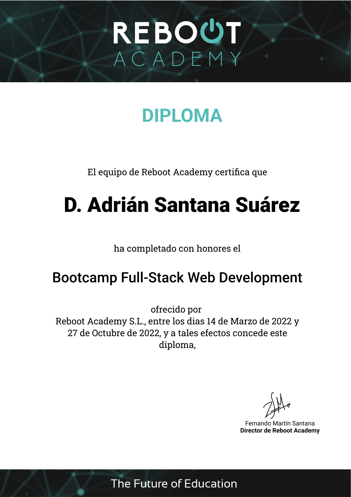
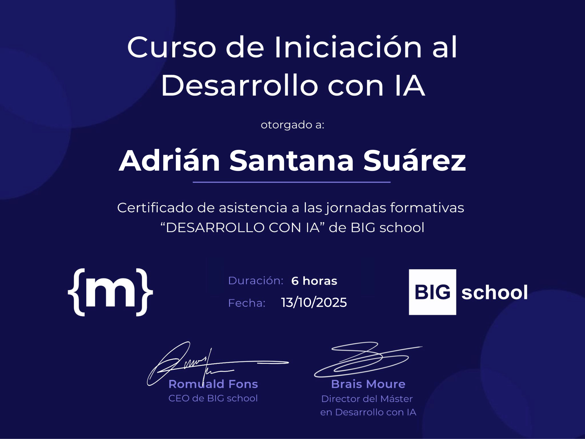
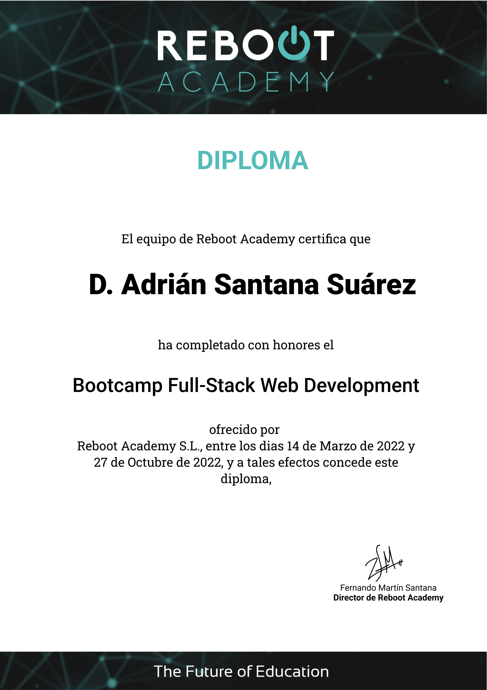
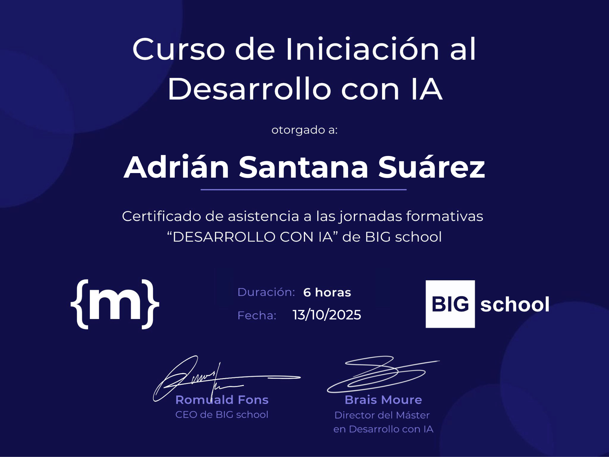

Sobre mi:
¡Hola! Soy Adrián, un programador junior con muchas ganas de seguir creciendo en el mundo del desarrollo
web. Desde que
empecé a aprender programación, descubrí que me apasiona transformar ideas en experiencias digitales que
sean útiles,
visuales y fáciles de usar.
Aunque tengo conocimientos tanto en frontend como en backend, me siento especialmente motivado por la
parte frontend,
donde puedo combinar mi lado creativo con la lógica del código para construir interfaces dinámicas y
agradables. Me
gusta cuidar los detalles, aprender nuevas herramientas y mejorar constantemente mis habilidades para
ofrecer soluciones
cada vez más completas.
Durante mi aprendizaje he trabajado con HTML, CSS, JavaScript, Vue, NodeJS, PHP, MySQL y MongoDB, lo que
me ha permitido
entender cómo se conectan las diferentes partes de una aplicación web y cómo optimizar la comunicación
entre el cliente
y el servidor.
Actualmente, mi objetivo es adquirir experiencia profesional en proyectos reales, especialmente en el
área del frontend,
donde pueda seguir aprendiendo de otros desarrolladores, aportar mis ideas y crecer dentro de un
equipo.
Soy una persona curiosa, responsable y con muchas ganas de aprender. Me entusiasma enfrentar nuevos
retos, experimentar
con tecnologías y seguir mejorando día a día como desarrollador.
Experiencia:
En 2022 realicé el Bootcamp de Reboot Academy, un curso intensivo de desarrollo web full stack
de 500 horas
donde aprendí HTML, CSS, JavaScript, NodeJS, MongoDB, Vue, GitHub y Postman. Durante el bootcamp,
trabajé en varios
proyectos individuales y en equipo que me permitieron aplicar lo aprendido y desarrollar mis habilidades
prácticas.
El primer proyecto fue Robbery-to-Reboot, un
juego web desarrollado en equipo que me permitió colaborar con otros desarrolladores, aprender a usar
herramientas
de control de versiones como GitHub y mejorar mis habilidades de comunicación y trabajo en
equipo.
El segundo proyecto fue totalmente Backend con otros compañeros en el que realizamos una liga de juegos
electronicos en el que habia que crear equipos con sus lideres y jugadores, gestionar las ligas en las
que se inscribian, etc. Este proyecto me permitió profundizar en el desarrollo de APIs RESTful, la
gestión de bases de datos con MongoDB y la implementación de autenticación y autorización.
El tercer y último proyecto del bootcamp fue una aplicacion llamada Postflop Manager para enseñar a
jugar al poker en el que se
utilizaba todo lo aprendido en el bootcamp, uzamos Vue en la parte Fronted. Este proyecto me permitió
consolidar mis conocimientos en
desarrollo full stack, desde el diseño de la interfaz de usuario hasta la implementación del backend y
la integración con la base de datos.
Además, he creado proyectos personales como Lista de Tareas, una aplicación
sencilla para gestionar tareas diarias que me ayudó a profundizar en JavaScript y mejorar mis
habilidades
en la creación
de interfaces interactivas.
Un Cubo 3D, un proyecto en el que utilicé HTML, CSS para
crear un cubo en 3D.
Un Foro de Videojuegos, donde
los usuarios pueden registrarse, iniciar sesión,
crear publicaciones y comentar en las publicaciones de otros usuarios. Este proyecto me permitió
aprender algo de PHP y MySQL.
Aunque aún no tengo experiencia laboral formal como desarrollador, estoy muy motivado por seguir
aprendiendo y creciendo
en este campo. Estoy abierto a oportunidades que me permitan adquirir experiencia práctica, trabajar en
proyectos reales
y seguir desarrollando mis habilidades técnicas y profesionales.
En 2020 y 2021 hice dos cursos en Udemy uno de Fundamentos de la Programación y otro de
Diseño Web desde
Cero a Avanzado donde tuve mi primer contacto con HTML y CSS.


 


